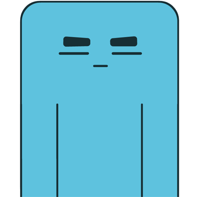

翻滚吧，艾改错
!
AIGAICUO · ROLLING ADVENTURE
玩法说明 ↗
奇妙浮岛 / 16 关挑战
● 思考一下，再翻个身
初次翻滚
每一次翻身，都离终点更近一点。
关卡
01 / 16
步数
00
正在唤醒艾改错…
小心边缘。保持可爱。
↑ 远处
← 左侧 · 右侧 →
↓ 近处
翻滚方向
WASD / 方向键
↑
←
↓
→
沿屏幕方向直滑 · 每次只翻一步
让艾改错
站立
落入黄色终点。
↶ 撤销
↻ 重来
⚑ 投降看答案
×